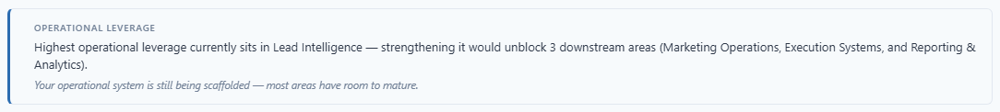
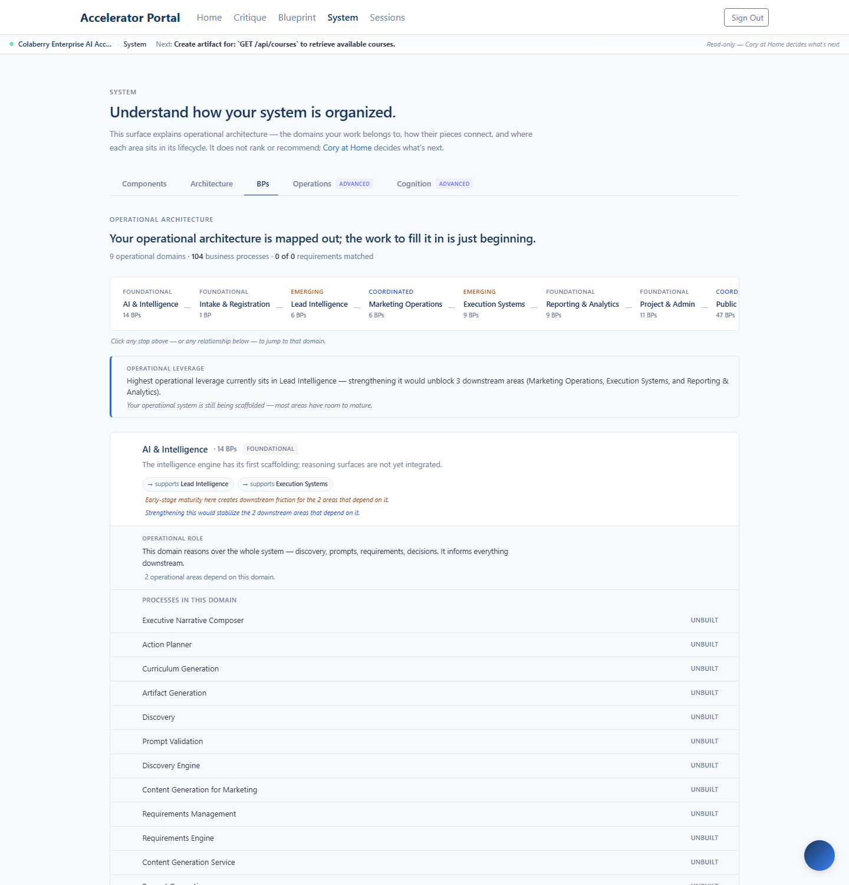
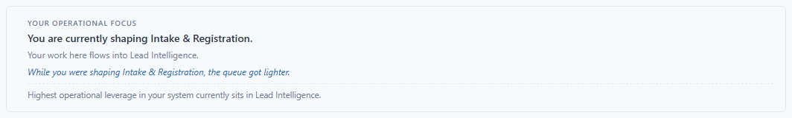
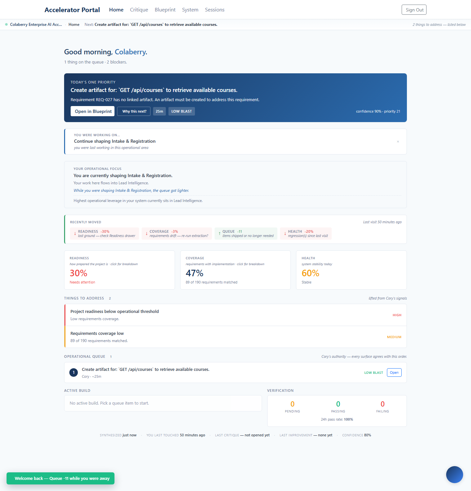

Shipped 2026-05-15 to enterprise.colaberry.ai (commit
4a98938). The previous sprint taught the workspace to
communicate where the operator is shaping the system. This one teaches
it to communicate where in the operational system effort would
ripple furthest — without recommending anything.
Above the domain stack on System BPs, a calm editorial sentence reads the structural facts and names where effort would travel furthest. Conditional verb ("would unblock"), explicit downstream count, named downstream areas. Silent when no domain meaningfully stands out.

constrained_downstream ("strengthening it would unblock N"), broadest_surface ("ripple through"), mature_anchor ("currently anchors the broadest operational surface", no "would" — contextual).Each domain row already carries a backward-looking pressure note (amber italic) when an upstream area is weaker than it. This sprint adds a forward-looking leverage note (blue italic) when there is room downstream. Two halves of the same coin — pressure looking upstream, leverage looking downstream — living in the same italic group so they read together.
| Note | Direction | Language |
|---|---|---|
| Pressure | Backward (upstream) | "Constrained by early-stage Intake upstream — strengthening that area unblocks this one." |
| Leverage | Forward (downstream) | "Strengthening this would stabilize the 2 downstream areas that depend on it." |
The full System BPs surface, post-deploy:

When the operator leaves System BPs, the surface persists a
lastLeverageSummary to workspace memory. On the next
Home visit, OperatorFocusCard reads it from the frozen
session-start memory and renders one ambient footer line — but only
when it points somewhere different from the focus domain
(otherwise it'd restate what the operator is already looking at).
No new fetch on Home, no new card.

The card now reads, top to bottom: orientation (where you are) → flows-into (what it influences) → impact (what moved while you were there) → cached system-level leverage observation (after a dashed divider). The footer line is the system telling the operator "there's a separate area worth knowing about" — never "you should go there".
Home in full, with the seeded memory state:

lastLeverageSummary yet (operator hasn't visited System BPs in this browser).The most psychologically loaded line in the sprint is the leverage headline. It would be very easy to drift toward "Focus your effort on Lead Intelligence" — a recommendation. Instead, every sentence describes structural facts about the system with conditional verbs, leaving the operator to draw the inference.
| Forbidden framing | Shipped framing |
|---|---|
| "You should focus on Lead Intelligence next." | "Highest operational leverage currently sits in Lead Intelligence — strengthening it would unblock 3 downstream areas." |
| "Fix Intake first — it's blocking everything downstream." | "Strengthening this would stabilize the 2 downstream areas that depend on it." |
| "Optimal next move: stabilize Execution." | "Continued maturation here would reinforce 1 downstream area." |
| "Lead Intelligence will guarantee Reporting improvements." | "Lead Intelligence currently anchors the broadest operational surface." |
| Recommendation | Observation |
operationalLeverage.ts.you should, you must, you need to, fix, address, do this.guarantee, optimal, perfect, definitely, best practice.null when there's nothing meaningful to say — surfaces render nothing rather than fall back to filler.Scanned the workspace + page surfaces for any drift toward assignments, deadlines, alerts, reminders, due dates, todos, or imperative operator-addressing phrasing.
| Pattern | Where found | Action |
|---|---|---|
\b(assign|deadline|todo|due date|reminder)\b | Only in a doc comment explicitly disclaiming notifications (MicroToast.tsx: "NOT a notification system") | No drift |
you should / you must / you need to | Zero hits in pages/portal or components/workspace | No drift |
fix this / address this | One hit in PortalBusinessProcessDetail.tsx, inside a Claude Code prompt body that gets copied to Claude — not operator-facing copy | Out of scope |
| Recommendation-engine vocabulary in leverage util | Suite enforces no imperatives, no certainty words, no exclamations | Asserted by tests |
The platform now reads leverage from the structural facts it already had on screen — lifecycle states, downstream counts, pressure notes — and surfaces that reading editorially. The headline names where effort would travel furthest; per-row notes mirror upstream pressure with downstream leverage; Home carries the cached observation forward.
Net stats: 9 files (3 new), 211 tests passing (25 new), production deployed and verified. No backend changes, no new endpoints, no recommendation engine. Every leverage statement is a reading of facts the classifier already computes.
What's not in this sprint: task ranking, "next best action" suggestions, AI inference about what the operator should do next. The line we did not cross.